Rivières
To celebrate the city of Montreal’s 375th anniversary, two artists are marking the uniqueness of Côte-des-Neiges by creating Rivières, a series of documentary performances presented in the borough’s transformed community center. This show is a tribute to citizens, who have come together to meet, listen and recognize one another.
Created by Sofia Blondin and Veronica Mockler, this innovative documentary production is
FREE and will take place on December 15th and 16th 2017 at 8PM (EST) in Centre Communautaire de Loisir de la Côte-des-Neiges.
BOOK YOUR FREE TICKETS ONLINE NOW.
Côte-des-Neiges
Then, a little french village where tanners and farmers would use the flow of its narrow stream. Now, a metropolitan borough where students, newcomers and families mingle together. Côte-des-Neiges is a bustling area where hundreds of education and health workers circulate everyday. It is a pivotal area where all religious backgrounds exist and where 110 different languages are spoken. Over time, Côte-des-Neiges has become a gushing river that carries thousands of lives, where many stories of migration have converged.
A free show!
Rivières has found all of it's participants! Now, join us on December 15th and 16th 2017 at 8PM (EST) in Centre Communautaire de Loisir de la Côte-des-Neiges.
BOOK YOUR FREE TICKETS ONLINE NOW.
Support Rivières
This show will be free as we hope it will be able to reach as many as possible. If you would like to contribute to Rivières’ creation, sponsor this project or simply support it financially, please write us an email :
rivieres375mtl@gmail.com
Sofia
Sofia Blondin graduated from the National Theater School of Canada’s Acting Program in 2016. She has since collaborated as an actress with many theatrical productions here in Montreal. Sofia has also gained a larger audience with her role in Quebecois television show District 31. Sofia’s theater practice is very much rooted in creating links with her community which explains her work with amateurs actors and love for teaching.
Veronica
Veronica Mockler is a visual artist working and living in Montreal (QC) Canada. She graduated in 2014 from Concordia University’s Studio Arts program. Veronica’s practice is about the radical experience of the other. Her work has been featured locally and internationally in both galleries and festivals (Redding Flagg Gallery (Toronto), Dazibao, Eastern Bloc (Montréal), La Biennale Manif. d’Art Internationale (Québec), Gstaad International Festival (Uruguay), and more.). Her practice stands at the crossroads of video art, documentary, performance and advocacy.
For more information on the artist, visit
VERONICAMOCKLER.COM
Émile
Émile Beaudoin Lafortune is completing his final year in Canada's National Theater School production program. He is interested in the position that holds theater within a society that is constantly representing itself. His goal is to engage with artistic endeavors that have a direct impact on human connexion.
For any inquiries, please do not hesitate to contact us at
rivieres375mtl@gmail.com
The Centre Communautaire de Loisir de la Côte-des-Neiges (CELO) is celebrating its 40th anniversary this year! Since its beginnings, this well-known organization aims to provide the citizens of Côte-des-Neiges a harmonious and participative space where popular education, community action and collective activities are at the forefront. The CELO is very proud to produce Rivières with artists Sofia Blondin and Veronica Mockler.
For more information on CELO's activities, please visit their website at cclcdn.qc.ca
Rivières was made possible by the generous support of The National Theatre School of Canada's Theatre Engaging Communities (TEC) grant.
This website was designed by Aden Collinge.
The subject is Mr. Balwant Chugh, in his Boutique UMA
in Côte-des-Neiges.
Moving-image taken by Veronica Mockler.
 
